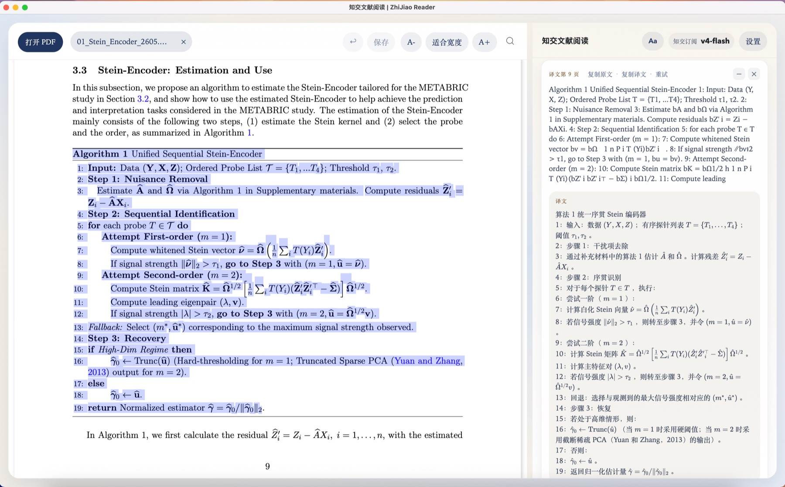
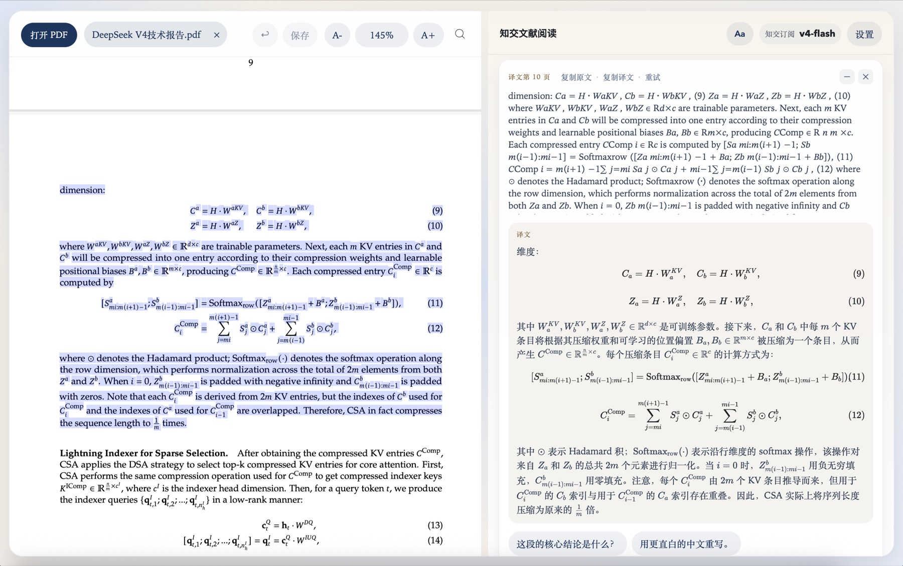
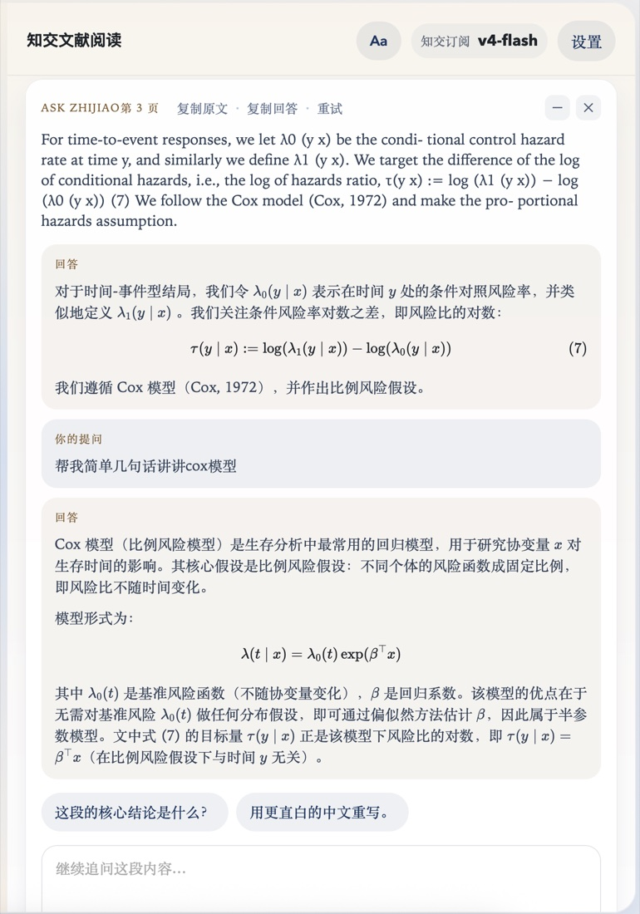
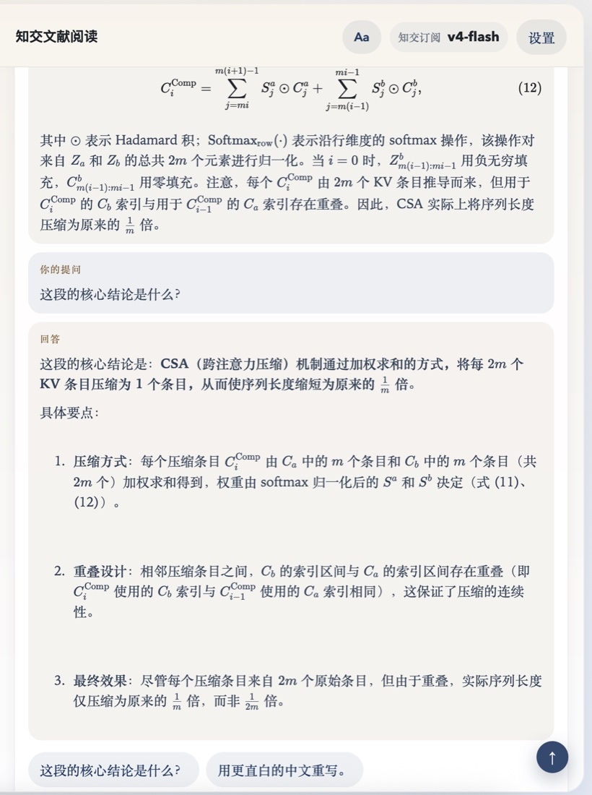
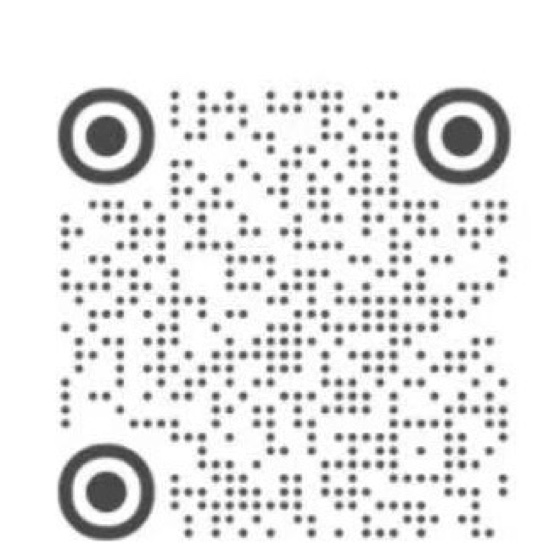

为理工科同学做的 AI 文献阅读器。选中一段英文，两秒内看懂——公式不再变成乱码。
数学公式完整渲染、术语单独解释、同段落连续追问，划线批注还能写回 PDF 文件。
网页版免安装 · 桌面版支持 macOS / Windows · 可用订阅码，也可以填自己的 API key
差别只有一处，但对理工科论文是决定性的：公式。数学、物理、统计、计算机——只要你的论文里有公式，这一处就够了。

bv = bΩ 1 n P i 到真正的公式PDF 里的公式复制出来就是一堆散字符：帽子掉了、求和号变成字母 P、下标全部散落。通用翻译软件原样丢给你，甚至越翻越乱。
知交把它还原成排版正确的公式，连算法的行号和缩进都保留。还有多层自动修复，专门兜住模型常犯的公式错误。

不用一句句复制。拖选连续几段，译文立刻流式出现在右栏，公式编号跟原文一一对上。
上图读的正是 DeepSeek V4 技术报告——你可以在网页版里一键打开同一篇，自己试。
译文不是终点。每张卡片都能就这一段继续追问，上下文一直保留——可以点预设问题，也可以自己打字问。


为「一读一下午」这件事打磨的细节。
完整的 KaTeX 渲染，加上多层自动修复兜住模型常犯的公式错误。通用翻译软件在这里全军覆没。
五色高亮加批注卡片，⌘S 直接写进 PDF 文件本身。WPS、Adobe、预览打开都看得见，它们做的高亮这里也读得出来。可撤销 / 重做。桌面版功能。
每段译文都是一张卡片，可就这一段连续追问，上下文一直保留。术语解释单独成段，不和正文混在一起。
暖纸色背景、衬线正文，字号行距可调并记住。多标签页瞬时切换，每篇停在你上次读到的位置。
PDF 始终留在你的设备上，只有选中的那段文字会发出去调用模型。桌面版的 API key 只存本机。
拖放打开 PDF；划词即译，也可改成右键触发防误触；全中文界面；中途关掉卡片立刻停止计费。
右键把原文、或原文加译文追加进本地 markdown 笔记夹（Obsidian 兼容）。桌面版功能。
桌面版可切换 DeepSeek、上海交大 API、OpenAI，或任意 OpenAI 兼容接口，保存前能测连接。
没有阉割版。阅读功能完全一致，区别只在于模型额度谁来出。
| 知交订阅 | 自带 API key | |
|---|---|---|
| 需要做什么 | 填一个订阅码 | 自己申请 API key 并填入 |
| 模型 | 内置 DeepSeek v4-flash，无需配置 | 你选：DeepSeek / SJTU / OpenAI / 自定义 |
| 费用 | 订阅内含额度 | 软件免费，模型按你自己的账户计费 |
| 网页版 | 浏览器直接用，免安装 | —（桌面版专属） |
| 适合谁 | 不想折腾 API 配置的读者 | 已有 key，或想完全自己掌控 |
当前版本 v1.1.2
本软件还没有购买苹果和微软的代码签名证书（每年数千元），所以首次启动系统会警告。
macOS：提示「无法打开，因为 Apple 无法检查它是否包含恶意软件」时——
/应用程序/知交文献阅读.app或者在终端里执行一行命令：
xattr -dr com.apple.quarantine "/Applications/知交文献阅读.app"Windows：弹出「Windows 已保护你的电脑」时，点「更多信息」→「仍要运行」。
提示：扫描版（文字不能选中的）PDF 暂不支持。
订阅码、使用问题、功能建议，都可以直接找我。
